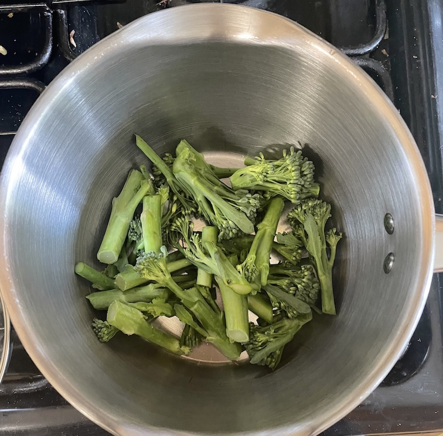
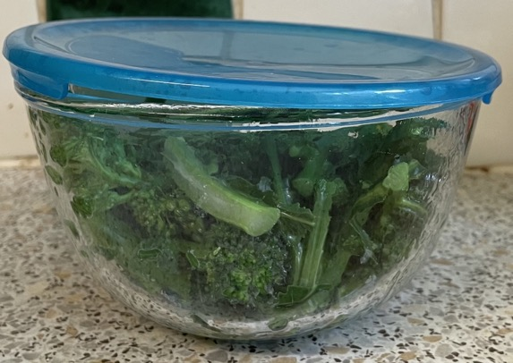
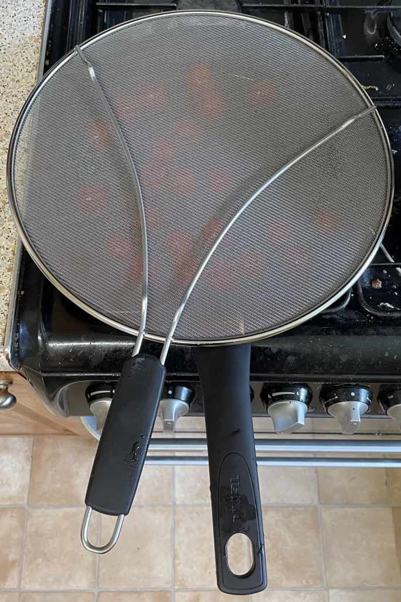

Red prawn spaghetti
Prawns
- Brine and alkalise prawns
Broccoli
- Heat pan of water to boiling
- Cook for 2-3 mins
- 100g sprouting broccoli thick stems sliced in half
- Drain
- Transfer to Pyrex bowl and cover with lid
Spaghetti
- Heat pan of fresh water to boiling
- Cook 190g spaghetti
- Drain spaghetti but keep some liquid in the pot
Sauce
- Fry on medium heat for 8 mins until almost cooked
- 2 tbsp olive oil
- 150g cherry tomatoes
- Add and cook for 1 min
- 2 cloves garlic
- 1 red chilli chopped (if using red pesto)
- Add and cook for 4 mins
- Remove heat and add
- 2 tbsp harissa or 3 tbsp red pesto
- zest of ¼-½ lemon
- juice of lemon
- broccoli cooked
- pinch of salt
- Add spaghetti
- spaghetti cooked
- pasta cooking water to make smooth
Serving
- 3 portions: 270g spaghetti, 225g tomatoes, 150g broccoli, 225g prawns, 3 garlic, 3 tbsp harissa
- 4 portions: 360g spaghetti, 300g tomatoes, 200g broccoli, 300g prawns, 4 garlic, 4 tbsp harissa
Notes
Pics


